<title>第 14 章　使用 ClickHouse 進行高效資料儲存 — 《可觀測性工程》第二版</title>
<link rel="stylesheet" href="style.css">

<nav class="chapnav">
    <a href="ch13.html">← 上一章</a>
    <a href="index.html">目錄</a>
    <a href="ch15.html">下一章 →</a>
  </nav>
<main>
  <header class="masthead">
    <span class="eyebrow">Observability Engineering · Second Edition</span>
    
    <h1 class="title serif">第 14 章<br>使用 ClickHouse 進行高效資料儲存</h1>
    <div class="rule"></div>
  </header>

  <h2 class="section serif">本章由 ClickHouse 團隊成員 Rory Crispin、Vlad Seliverstov、Xander Garbett 和 Dale McDiarmid 撰寫</h2>
<h3 class="subsection">來自 Charity、Liz、George 與 Austin 的說明</h3>
<p>在前一章中，你學到了 Honeycomb Retriever 資料儲存在設計與實作上，為了管理可觀測性工作負載所做的取捨。在本章中，你將看到一個廣受歡迎的開源資料儲存，是如何以相對照的取捨方式來解決相同的問題。欄式資料庫技術的多種實作，都能實現本書一直以來所提倡的探索式資料工作流程；我們邀請了 ClickHouse 團隊分享他們經過實戰考驗的做法。如果你已經在使用ClickHouse 作為可觀測性資料的儲存後端，或是正在考慮以 ClickHouse 為基礎進行建構，閱讀本章可能會特別有價值。</p>
<p>現代可觀測性工作負載需要具備彈性的綱要（schema），以擷取不斷演變的遙測資料，需要能夠維持每秒數百萬列的擷取速率，也需要足夠低的查詢延遲，才能在數兆列資料上支援互動式的探索。你不必被綁定在任何單一特定的廠商或解決方案上，但了解這些解決方案的存在，以及它們架構的相關知識，能幫助你做出更好的技術決策，以支援業務與營運上的需求。</p>
<p>本章接下來的內容，是以 ClickHouse 團隊的觀點撰寫。</p>
<p>ClickHouse 是一款開源、欄式導向的資料庫管理系統，設計用於大規模的即時分析查詢。它透過欄式儲存引擎、向量化執行，以及對綱要豐富的事件資料的支援，來因應現代可觀測性工作負載的需求。這些設計決策使它能夠作為遙測資料的統一後端，而不需要依賴預先聚合或僵化的流水線。</p>
<p>ClickHouse 能夠以高速攝取並查詢大量的事件資料，這使得快速根本原因分析與營運決策所需的臨時分析（ad hoc analysis）成為可能。可觀測性資料透過標準 SQL 對外暴露，讓團隊得以使用熟悉的語法與工具。ClickHouse 擁抱開放標準，支援直接以美國國家標準協會（ANSI）SQL 存取，可用於互動式查詢、儀表板，以及與警報或 AI 流水線等下游系統整合。這確保了互通性，並避免查詢或 schema 被鎖定。開放原始碼專案、社群整合以及如 HyperDX之類的自訂工具，則為視覺化與工作流程整合提供了更多選項。舉例來說，Dash0、SigNoz 與 SolarWinds 底層都是以 ClickHouse 作為其資料儲存。</p>
<p>透過將多種遙測訊號類型整合成高基數的包含大量屬性的事件（wide events），ClickHouse 不僅支援結構化、高維度的資料，還能在查詢時跨越各種非可觀測性資料來源進行關聯分析。這項能力讓你能將 ClickHouse 作為現代可觀測性工作負載的後端，同時也能將其連接到用於資料倉儲及其他新興工作負載的資料來源。</p>
<p>本章將說明 ClickHouse 如何支援以包含大量屬性的事件為基礎的可觀測性模型，支援快速探索、即時警報與根本原因分析。我們會介紹 ClickHouse 性能背後的核心概念，逐步說明如何以 OTel 進行實務上的資料攝取，概述關鍵的schema 與查詢優化，並涵蓋從單一節點擴展到跨區域叢集的策略。最後，我們會概述視覺化層如何連接到 ClickHouse 以進行分析。</p>
<h2 class="section serif">ClickHouse 核心概念</h2>
<p>以 ClickHouse 建置有效的可觀測性系統，首先要理解其架構如何與遙測資料的特性相互配合。可觀測性工作負載的需求相當嚴苛。現代系統會產生大量即時、高基數的資料與時間序列；這些資料需要被有效率地攝取，並可供分析查詢使用。在本節中，你將探討 MergeTree，也就是 ClickHouse 的儲存引擎。你也會看到 ClickHouse 如何在內部執行查詢、主鍵如何影響資料組織與讀取效率，以及各種快取層如何有助於提供一致的低延遲性能。</p>
<div class="callout"><p>MergeTree 在 ClickHouse 中以單一二進位檔案、同質架構的方式部署——每個節點都能同時處理讀取與寫入。這種一致的設計是理解 MergeTree 資料表運作方式的關鍵，因為資料攝取、背景合併以及查詢處理，在所有節點上都遵循相同的原理。透過分片（sharding）與複製（replication）從單一伺服器向外擴展，正是建立在這個共同基礎之上。專用的讀取或寫入路徑，則是在同一核心架構上所做的優化。</p></div>
<h2 class="section serif">MergeTree 基礎概念</h2>
<p>MergeTree 系列資料表引擎構成了 ClickHouse 中幾乎所有持久性儲存的基礎，並提供了多種變體以擴展此核心架構，用於聚合、分片與複寫。雖然在ClickHouse 中也可以使用其他引擎，但只有 MergeTree 是針對可觀測性優化的。</p>
<p>MergeTree 引擎將資料表組織成多個 part，每個 part 以欄位儲存格式儲存一部分資料列，並依資料表指定的排序鍵排序。每次插入都會產生一個 part，通常包含數千筆資料列。在每個 part 內，資料會進一步劃分為 granule——由連續資料列組成的區塊，作為索引的最小單位，有助於資料略過（data skipping）。一旦寫入完成，這些 part 即為不可變的，背景程序會持續將較小的 part合併成較大的新 part，直到達到可設定的最大大小上限——在撰寫本文時，預設為 150 GB。</p>
<p>可觀測性資料大多是只寫一次的：你附加事件，很少對其進行修改。這與 ClickHouse 不可變 part 的設計及快速插入路徑相符。當需要進行變更與遮蔽時，ClickHouse 確實支援輕量級的更新與刪除，但這些操作本質上會比僅附加（append‑only）的寫入慢，最好不要放在熱路徑上。</p>
<div class="callout"><p>這種做法讓人聯想到日誌結構合併樹（LSM tree）：不可變寫入、背景整併與最終壓實。然而 MergeTree 在兩個關鍵點上有所不同：它是以欄位為導向而非以資料列為導向，並且明確依使用者定義的鍵（「主鍵」）排序。這些差異使其針對分析型工作負載進行優化，而非交易型工作負載。</p></div>
<p>這種「每次插入一個 part」的架構，正是 ClickHouse 能夠在沒有協調開銷的情況下維持極高插入速率的關鍵。背景合併會逐步將這些 part 整併為更大的排序區塊，不僅能有效壓縮，也能保留資料的局部性以加快存取速度。其結果是一個特別適合儲存包含大量屬性、高基數的事件資料的儲存引擎：它能以串流規模進行插入、在維持排序的同時將儲存空間壓縮至最小，並加快必須掃描數十億筆資料列的分析查詢。</p>
<p>為了更深入了解 MergeTree 中插入操作的運作方式，請參考範例 14‑1。此範例透過建立一個 events 資料表並插入幾筆範例記錄，示範原始插入如何被轉換為持久且可查詢的資料 part。</p>
<p>範例 14‑1。在 ClickHouse 中建立資料表並插入事件的 SQL 陳述式範例。</p>
<pre class="code">CREATE TABLE events
(
    `Timestamp` DateTime,
    `ServiceName` String,
    `SeverityText` String,
    `Message` String,
    `RequestId` String
)
ENGINE = MergeTree
PRIMARY KEY ( ServiceName, Timestamp)
INSERT INTO events (Timestamp, ServiceName, SeverityText, Message)
VALUES
    (<span class="tok-string">'2025-09-05 10:15:00'</span>, <span class="tok-string">'nginx-d'</span>, <span class="tok-string">'info'</span>, <span class="tok-string">'User login successful'</span>);</pre>
<p>執行這段程式碼之後，ClickHouse 會執行一連串操作，將插入的資料列轉換成持久且可查詢的資料分區（data part）：</p>
<dl class="deflist"><dt>排序</dt><dd>資料列會先依資料表的主鍵排序。這些欄位應該是能定義資料自然排序順序的欄位。排序能讓後續的過濾與範圍掃描更有效率。</dd><dt>索引建立</dt><dd>在排序的同時，ClickHouse 會建立一個稀疏主索引。這並非針對每一列建立完整索引，而是在每個顆粒（granule，一個排序後的資料列區塊，通常設定為約 8,000 列）開頭記錄第一個鍵值（參見圖 14‑1）。這使得索引小到足以保留在記憶體中，同時仍讓 ClickHouse 能夠尋址並跳過大量不相關的資料。</dd></dl>
<p>欄式儲存與壓縮</p>
<p>接著，各欄位的值會依照資料列的排序順序，以欄式格式分別寫入。在寫入之前，每個欄位都會先經過壓縮。可觀測性資料的壓縮率經常能達到20:1 甚至更高。</p>
<dl class="deflist"><dt>資料分區完成</dt><dd>壓縮後的欄位檔案、稀疏索引與中繼資料會一起打包成前面提到的不可變分區。這些分區之後會在背景中合併，形成新的、更大的分區，但每個個別的分區在建立後即可立即用於查詢，讓延遲抵達的資料也能有效地儲存與查詢。</dd><dt>資料組織</dt><dd>接著 ClickHouse 可以將相關的部分（part）儲存在稱為分區（partition）的群組或資料夾中。部分（part）永遠不會跨分區合併，因此可以讓某些操作以資料夾為整體進行。分區應該是粗粒度的，並基於低基數的欄位，因為設定細粒度的分區會妨礙 ClickHouse 對部分進行優化。</dd></dl>
<figure class="plate">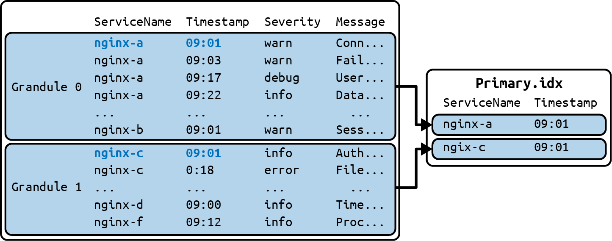
<figcaption>圖 14‑1　資料列儲存在顆粒（granule）中，並依照主鍵中定義的欄位排序。</figcaption></figure>
<p>儲存每個顆粒起始位置的稀疏主索引，讓 ClickHouse 能夠優化尋找特定位置的速度。</p>
<h2 class="section serif">查詢執行</h2>
<p>雖然建立資料表與插入資料是必要的步驟，但了解查詢如何執行才是掌握ClickHouse 的關鍵。畢竟，快速儲存資料並沒有意義，除非你也能快速查詢它！查詢執行定義了資料如何被檢索與處理，掌握這點能讓用戶優化性能、除錯複雜的工作負載，並設計出高效的介面。</p>
<p>前面範例的資料現在已經載入到我們的資料表中，接著讓我們看看如何查詢並存取它。最常見的可觀測性查詢是「顯示 X 服務在過去 N 分鐘的資料」。讓我們看看 ClickHouse 如何處理這樣的查詢。</p>
<p>範例 14‑2 所示的查詢，會擷取 kube‑system 服務在兩個時間戳記之間的1,000 筆日誌事件，並依時間順序回傳 Message 欄位。</p>
<p>範例 14‑2. 日誌事件過濾的範例查詢。</p>
<pre class="code"><span class="tok-keyword">SELECT</span> Message
<span class="tok-keyword">FROM</span> events
<span class="tok-keyword">WHERE</span> Timestamp BETWEEN <span class="tok-string">'2025-07-22 10:13'</span> AND <span class="tok-string">'2025-07-22 10:15'</span>
  AND ServiceName = <span class="tok-string">'kube-system'</span>
<span class="tok-keyword">ORDER</span> <span class="tok-keyword">BY</span> Timestamp ASC
<span class="tok-keyword">LIMIT</span> <span class="tok-number">1000</span></pre>
<p>以下概述此查詢執行時發生的操作順序：</p>
<p>1. 分區裁剪 首先，ClickHouse 會嘗試從被掃描的資料中排除整個分區。例如，若該範例資料表以 toStartOfDay(Timestamp) 進行分區，資料庫會立即捨棄所有與 2025‑07‑22 10:13 到 2025‑07‑22 10:15 沒有重疊的分區。</p>
<p>2. Part 裁剪 接著 ClickHouse 會檢查每個資料 part 的中繼資料。該中繼資料包含該 part 內主鍵欄位（ServiceName、Timestamp）的最小值與最大值。若某個 part 的 Timestamp 範圍與 2025‑07‑22 10:13 到 2025‑07‑22 10:15 沒有重疊，就會立即被捨棄。</p>
<p>3. 索引掃描與 granule 裁剪 ClickHouse 會查閱剩餘 part 的稀疏主鍵索引。由於資料在 part 內先依 ServiceName 排序、再依 Timestamp 排序，ClickHouse 可以對索引值進行二元搜尋，快速找出資料可能符合條件的一小段候選 granule 範圍。</p>
<p>4. 欄式掃描 找出候選 granule 後，ClickHouse 會讀取這些特定 granule 的ServiceName 與 Timestamp 欄位資料，並對這些資料執行過濾，以判定確切符合 WHERE 子句的資料列。</p>
<p>取得符合條件的資料列偏移量後，系統會從 Message 欄位擷取所需的 granule，進行解壓縮並在對應偏移量處讀取——這就是我們查詢的最終輸出。請注意，如同第 13 章討論過的 Retriever，查詢中未涉及的欄位從未被擷取，而Message 欄位也是直到最終確定符合條件的資料列後才被讀取（也就是所謂的惰性物化）。這項特性對於包含大量屬性的事件的高效查詢至關重要，因為在包含大量屬性的事件中，大多數欄位都不會被查詢到。</p>
<p>在接下來的章節中，我們將探討結構化日誌與非結構化日誌之間的差異，以及各自如何影響 ClickHouse 中的查詢性能。我們會檢視這兩種方法的優點與取捨，說明用戶如何在結構與靈活性之間取得平衡，以達到最佳效果。接著我們會討論</p>
<p>本節將討論可觀測性情境下，以查詢效率為導向的主鍵設計，並概略介紹ClickHouse 提供的幾種關鍵快取機制。</p>
<h3 class="subsection">結構化日誌</h3>
<p>如第 5 章所述，將純文字日誌轉換為結構化事件，能加快資料查詢速度、提升儲存效率，並讓聚合查詢的調查工作更加強大。</p>
<p>自然而然的第一步，是將結構化事件儲存於 SQL 資料庫中，為每個重要屬性建立一個欄位。舉例來說：</p>
<pre class="code">ALTER TABLE events ADD COLUMN HttpMethod String;
ALTER TABLE events ADD COLUMN HttpStatusCode UInt16;
ALTER TABLE events ADD COLUMN HttpPath String;</pre>
<p>以這種方式儲存資料後，原本針對純文字日誌字串執行成本高昂的 LIKE 運算，就能改為直接從欄位讀取而加速，就像下面這個查詢一樣：</p>
<pre class="code"><span class="tok-keyword">SELECT</span> * <span class="tok-keyword">FROM</span> events
<span class="tok-keyword">WHERE</span> Timestamp BETWEEN now() - INTERVAL <span class="tok-number">1</span> HOUR AND now()
  AND HttpStatusCode = <span class="tok-number">404</span>;</pre>
<p>如你先前所見，將資料儲存為整數比使用非結構化字串更有效率。它在磁碟上占用的位元組較少，使資料的擷取、掃描與快取速度更快，同時也能加快比較速度，並可選擇加上索引以進一步提升效能。</p>
<p>然而，這種綱要（schema）無法乾淨地擴展。現代應用程式演進快速，新的屬性——customer.id、feature_flag.key、pod.name 以及無數其他屬性——經常被加入。為每個新出現的欄位新增一個頂層欄實在難以持續，尤其是許多屬性壽命短暫，或僅與特定事件子集相關。對於快速發展的工程團隊來說，一個每個屬性都要固定一欄的僵化綱要，帶來的是阻力而非彈性。</p>
<h3 class="subsection">以 map 兼顧結構與彈性</h3>
<p>為了因應可觀測性資料中屬性不斷演進所帶來的可擴展性挑戰，ClickHouse提供強大的半結構化資料能力。你可以保留少數關鍵的頂層欄位，同時將其他所有屬性儲存在彈性的 Map 資料型別中。這讓你兩全其美：常見屬性以具體欄位獲得效能，任意屬性則以 Map 型別獲得彈性。</p>
<p>讓我們用 log 屬性的 map 來增強這個表格：</p>
<pre class="code">ALTER TABLE events ADD COLUMN LogAttributes Map(String, String) CODEC(ZSTD(<span class="tok-number">1</span>));</pre>
<p>現在，你的事件擷取流水線可以解析傳入的事件，並填入結構化欄位與attributes map，無論該欄位名稱是否曾經出現過。</p>
<p>這種做法能讓你的主要 schema 保持乾淨，同時保留所有的情境資訊。</p>
<p>Map 類型有性能上的取捨。存取 Map 中的一個 key 需要讀取所有的 key 與 value，因此比查詢專屬欄位更耗費輸入／輸出（I/O）資源。Map 的 key 也無法作為主鍵的一部分。基於這些原因，map 應謹慎使用，並隨著時間推移，針對你的查詢負載，將其替換為性能更好的結構。</p>
<div class="callout"><p>這種結構化欄位與半結構化 map 並用的混合模型，是打造強健且具適應性可觀測性平台的基石。如同我們先前所討論的，下一步是進一步優化對這類map 資料的查詢，針對隨時間推移成為「熱門」查詢目標的屬性，使用跳躍索引（skip index）與具體化欄位（materialized column）。</p></div>
<p>2025 年引入 ClickHouse 的 JSON 類型旨在簡化可觀測性使用情境，它能接受包含大量屬性的 JSON（JavaScript Object Notation）事件，並自動為經常出現的欄位建立具體欄位，同時將罕見的資料連同型別提示一併儲存在獨立的blob 結構中。在 JSON 類型出現之前，主動管理欄位具體化這項工作的分割，一直是可觀測性平台維護者的責任（在必要時）。JSON 類型也讓在ClickHouse 中管理深度巢狀的 JSON 變得更加符合人體工學，並克服了 Map類型的性能挑戰。</p>
<p>了解 ClickHouse 如何儲存與擷取資料之後，你現在可以進一步探討如何設計schema 以有效運用這些能力。有關主鍵選擇、資料型別與保留政策的早期決策，會為你的可觀測性平台奠定日後建構的基礎。</p>
<h3 class="subsection">主鍵設計</h3>
<p>主鍵的選擇是 ClickHouse 性能的根本所在。主鍵決定了資料的實際排序方式，以及主鍵索引的結構，進而使快速的查詢剪枝（query pruning）成為可能。對於可觀測性工作負載而言，這項決策直接影響你篩選與彙總遙測資料的效率。</p>
<p>考慮你可觀測性系統中常見的查詢模式：</p>
<p>• 你通常是先按服務篩選，再按時間篩選嗎？例如：•</p>
<p>— PRIMARY KEY (ServiceName, Timestamp)—</p>
<p>• 你比較可能在特定時間窗內搜尋所有服務嗎？例如：</p>
<p>— PRIMARY KEY (Timestamp, ServiceName)—</p>
<p>主鍵應與你最頻繁且對效能最關鍵的查詢一致。如這些範例所示，沒有任何單一綱要能完美適用於每種使用情境。ClickHouse 透過提供實體化視圖（materialized view）與投影（projection），讓你能在資料擷取期間轉換資料並套用替代主鍵，藉此因應這項挑戰。我們將在第 255 頁的〈實務資料建模與優化〉一節中進一步探討這些功能。</p>
<h3 class="subsection">快取</h3>
<p>在調查過程中，你經常會在同一份資料集上執行多次搜尋，並逐步調整篩選條件。你可能一開始先廣泛掃描錯誤，接著縮小到少數幾個服務，或依特定維度篩選。若沒有快取，每次精煉過的查詢都會重複處理 ClickHouse 已經掃描過的資料，浪費計算資源並拖慢你的調查流程。</p>
<p>ClickHouse 使用多層快取系統來大幅加速查詢效能。每種快取類型都運作於查詢執行流水線的不同層級，從儲存完整的查詢結果到快取個別的資料區塊都有。在本節中，我們將重點介紹四種主要的快取機制，但還有其他機制可供你探索。</p>
<p>查詢快取（query cache）會將完整的查詢結果儲存於快取中，並使用查詢的抽象語法樹來比對條目。建議只針對特定、頻繁執行的查詢，透過查詢層級的設定來啟用查詢快取，以避免快取條目被反覆抖動（thrashing）——若對不常執行的查詢啟用此功能，就可能發生這種情況。</p>
<p>查詢條件快取（query condition cache，又稱謂詞快取（predicate cache））會在查詢執行期間儲存所掃描顆粒（granule）的相關資訊。舉例來說，若查詢有 threshold &gt; 10 這樣的條件，ClickHouse 會針對記憶體中每個掃描過的顆粒，為該條件儲存一個位元；若該顆粒沒有符合的條目，則儲存 0。這讓後續使用 threshold &gt; 10 的查詢能夠跳過掃描該顆粒，藉此提升查詢效能。</p>
<p>檔案系統快取主要用於磁碟或物件儲存的讀取通常較慢或成本較高的情況。它會將資料存放在較快速的磁碟上，以避免對較慢儲存體發出呼叫。它會快取來自資料表的原始資料，同時也會快取其他資料，例如資料表與粒度（granule）的元資料，甚至是其他格式（如 Parquet）的完整原始檔案。</p>
<p>用戶空間分頁快取（userspace page cache）是一種記憶體內快取。與檔案系統快取一樣，它可以儲存來自資料表或資料表元資料的資料。然而，與檔案系統快取不同的是，它將所有資訊都儲存在記憶體中。相較於純粹以記憶體為後端的檔案系統（如 tmpfs），這種做法具有優勢，因為 ClickHouse 可以主動管理記憶體，而不是將記憶體管理委託給核心（kernel）。</p>
<h2 class="section serif">收集資料</h2>
<p>在探討了 ClickHouse 如何儲存、組織與查詢可觀測性資料之後，我們現在可以來看看如何優化資料一開始抵達的方式。在本節中，我們將探討如何使用OpenTelemetry Collector 與 ClickHouse 匯出器（exporter）有效率地收集並插入遙測資料。你將學到這些元件如何組合成一條快速、可靠的擷取（ingestion）流水線；如何調校插入效能與持久性；以及針對不同架構需求，還有哪些替代的擷取選項。</p>
<h3 class="subsection">OpenTelemetry Collector 與 ClickHouse 匯出器</h3>
<p>儘管 ClickHouse 支援許多種資料擷取方式，我們將專注於如何快速上手並運用既有的遙測流水線。這代表要使用 OpenTelemetry Collector 來擷取資料。ClickHouse 匯出器提供了通用的結構描述（schema）預設值，以及有完整文件說明的設定選項，可用來調整匯出器的效能。</p>
<p>在預設情況下，ClickHouse 匯出器提供了插入大量資料的穩健基準，無需調校匯出器，並提供符合 OTel 日誌模型（OTel Logs model）的 ClickHouse 結構描述，適用於中小型工作負載。</p>
<p>你可以透過執行較少但較大量的插入操作，來最大化 ClickHouse 的插入效能。假設你正在使用集中式的 OTel 閘道器（gateway），加入批次處理器（batch processor）是達成此目標的好方法。</p>
<p>如果你沒有使用集中式閘道器，將 async_insert=1 設定啟用後，可讓ClickHouse 利用其非同步插入（asynchronous inserts）能力，在伺服器端對記錄進行批次處理。這使得多個匯出器（例如當 OTel 以 DaemonSet 或sidecar 方式執行時）可以傳送小型負載，而不必自行處理批次作業，省去了外部代理程式（agent）或閘道器的需求，並簡化了架構。</p>
<p>你也可以透過選擇 wait_for_async_insert=1 來控制持久性，以取得具有重試與反壓（backpressure）機制的確認式插入；或選擇 0 以取得射後不理（fire‑and‑forget）式的插入，用犧牲持久性來換取較低的延遲。</p>
<p>ClickHouse 開箱即用的冪等性同時也有助於處理網路故障。預設情況下，ClickHouse 會保留每個資料區塊內容的雜湊值（保留時間可設定），對於完全相符的插入操作會進行去重複處理，並回傳成功。這讓用戶端可以安全地重試失敗的插入操作。</p>
<h2 class="section serif">替代的資料擷取方式</h2>
<p>雖然前一節聚焦於透過 OpenTelemetry Collector 進行資料擷取，但這並非唯一的可觀測性流水線選項。</p>
<p>你的資料流水線幾乎總是會有獨特的需求。對於高持久性的流水線，你可以使用像 Kafka 或 S3 這樣的持久性儲存來推送訊息，然後透過原生的ClickHouse 引擎（例如 Kafka table engine 或 S3Queue）來擷取資料。相較於 collector 的本地磁碟，這種方式在發生反壓（backpressure）或計劃性停機時能提供更大的佇列空間。以我們的經驗來說，出於性能考量我們並不需要使用持久性流水線，因為我們的 ClickHouse 叢集可以輕鬆應付每秒數千萬筆插入的負載，但你對於韌性的需求可能有所不同。</p>
<p>此外，ClickHouse 支援種類繁多的輸入格式與語言用戶端，因此要將任何以你偏好語言撰寫的客製化資料來源連接到中央 ClickHouse 儲存，都相當簡單。</p>
<p>你甚至可以透過 table engine 連接到像 PostgreSQL 這樣的外部資料庫。或者你可能有一個能透過 webhook 產生 JSON 負載的外部系統（例如 PagerDuty webhook）。ClickHouse 的 HTTP 介面提供了一種方式來擷取該資料並加以整合。</p>
<p>這強化了一個更廣泛的重點：透過將可觀測性資料視為另一種資料問題來處理，你就可以在 ClickHouse 中無縫地將可觀測性訊號與其他可觀測性及業務資料集相互關聯，藉此取得更深層的脈絡並更豐富地理解問題。</p>
<h2 class="section serif">查詢資料</h2>
<p>既然資料現在已經流入 ClickHouse，下一步就是了解如何從中萃取出洞察。在本節中，我們將探討如何有效地查詢可觀測性資料——從揭示日誌與指標中模式的簡單搜尋與聚合，到即時連接不同事件串流的更進階聯結（join）。這些範例說明了 ClickHouse 如何將原始遙測資料轉化為可付諸行動的洞察，無論你是在調查個別錯誤，還是在跨系統關聯複雜行為。</p>
<h2 class="section serif">簡單查詢</h2>
<p>讓我們先來看看一些非常簡單的查詢，它們代表了可觀測性分析中常見的第一步。範例 14‑3 擷取過去一小時內服務名稱等於 nginx 且日誌訊息以關鍵字exited 開頭的所有行。</p>
<p>範例 14‑3。一個簡單的查詢。</p>
<pre class="code"><span class="tok-keyword">SELECT</span> *
<span class="tok-keyword">FROM</span> events
<span class="tok-keyword">WHERE</span> Timestamp &gt; now() - INTERVAL <span class="tok-number">1</span> hour
  AND ServiceName = <span class="tok-string">'nginx'</span>
  AND Message LIKE <span class="tok-string">'exited%'</span></pre>
<p>你也可以使用 HyperDX（一個由 ClickHouse 打造的開源可觀測性前端）以類似 Lucene 的語法（即ServiceName:nginx and Message:exited*）來組合這個查詢。詳情請參閱第 272 頁的〈Visualizing Your Data〉。</p>
<div class="callout"><p>稍微進階一點的查詢可以幫助我們從簡單的過濾，進一步理解事件中的性能模式。假設我們想找出在真實流量條件下哪些 nginx 端點最慢。透過幾個聚合操作，我們可以彙總過去一小時內所有請求的延遲、突顯出具有明顯負載的端點，並依照它們最差的回應時間排序，如範例 14‑4 所示。</p></div>
<p>範例 14‑4。一個較複雜的查詢。</p>
<pre class="code"><span class="tok-keyword">SELECT</span>
    Path,
    count() <span class="tok-keyword">AS</span> Requests,
    round(quantile(<span class="tok-number">0.95</span>)(RequestTime), <span class="tok-number">3</span>) <span class="tok-keyword">AS</span> P95_s,
    round(quantile(<span class="tok-number">0.99</span>)(RequestTime), <span class="tok-number">3</span>) <span class="tok-keyword">AS</span> P99_s
<span class="tok-keyword">FROM</span> events
<span class="tok-keyword">WHERE</span> ServiceName = <span class="tok-string">'nginx'</span>
  AND Timestamp &gt; now() - INTERVAL <span class="tok-number">1</span> HOUR
<span class="tok-keyword">GROUP</span> <span class="tok-keyword">BY</span> Path
HAVING Requests &gt;= <span class="tok-number">100</span>
<span class="tok-keyword">ORDER</span> <span class="tok-keyword">BY</span> P95_s DESC
<span class="tok-keyword">LIMIT</span> <span class="tok-number">20</span>;</pre>
<p>此查詢的結果（見表 14‑1）同時告訴我們三件事：</p>
<dl class="deflist"><dt>流量</dt><dd>我們可以看到每個端點在這段期間所處理的請求數量。</dd><dt>尾部延遲</dt><dd>在查詢時彙總每個端點的第 95 及第 99 百分位回應時間，在偵測性能問題時遠比簡單的平均值更有用。</dd><dt>優先排序</dt><dd>透過篩選出至少有 100 個請求的端點，並依最差的 P95 排序，我們可以將注意力集中在對用戶而言重要的端點上。</dd></dl>
<figure class="plate">
<figcaption><strong>表 14‑1．Example 14‑4 查詢的結果</strong></figcaption>
<div class="table-wrap">
<table class="datatable">
<thead><tr><th>路徑</th><th>請求數</th><th>P95 (s)</th><th>P99 (s)</th></tr></thead>
<tbody>
<tr><td>/api/v1/orders</td><td>40,723</td><td>1.034</td><td>1.78</td></tr>
<tr><td>/api/v1/users</td><td>23,161</td><td>0.699</td><td>1.08</td></tr>
<tr><td>/</td><td>56,093</td><td>0.555</td><td>0.895</td></tr>
<tr><td>/static/img</td><td>20,088</td><td>0.491</td><td>0.82</td></tr>
</tbody>
</table>
</div>
</figure>
<p>從這個結果集中，我們已經可以看出一些洞見：</p>
<p>• /api/v1/orders 是目前為止最慢的端點，P95 超過一秒，P99 接近兩秒，是首要的調查對象。</p>
<p>• /api/v1/users 相較於較輕量的端點也顯示出偏高的尾端延遲，不過仍然比/api/v1/orders 快上許多。</p>
<p>• 像是 / 和 /static/img 這類高流量但輕量的端點，儘管每天服務數萬筆請求，尾端延遲仍在一秒以內——目前無需擔心。</p>
<p>這種能夠一眼看出「痛點」的能力，正是關鍵優勢所在。相較於原始日誌（雜訊太多）或平均值（過於平滑），我們可以立即看出用戶體驗可能受損的地方。這比預先聚合的指標更好；它是即時計算的，而且正是使用我們所需要的維度與聚合方式。而且，因為這些數字是從包含大量屬性的事件推導出來的，我們可以無縫地從這些聚合指標放大到個別事件。</p>
<p>雖然這個範例很簡單（只按 path 做 GROUP BY），但你可以想像同時想要按path 和 version 查詢——甚至按 path、version 和 remote IP 位址查詢——這是任何指標系統都不可能在不超出基數限制的情況下，為其建立時間序列的！</p>
<h2 class="section serif">複雜的 JOIN</h2>
<p>為了展示以 ClickHouse 進行查詢的更複雜範例，讓我們思考如何以 ASOF JOIN 連接任意事件。</p>
<p>對 ClickHouse 而言，可觀測性不只是觀察單一事件流。真實系統會產生多種訊號：應用程式日誌、基礎設施事件、Kubernetes 事件，以及業務指標。這些串流往往各自獨立演變。我們面臨的挑戰不僅是收集它們，而是在需要回答問題時將它們連接起來。</p>
<p>傳統追蹤試圖透過預先強制建立關係來解決這個問題：固定的結構描述（schema）、追蹤 ID，以及在應用程式層進行關聯。這種做法適用於可預測的流程，但當關係是臨時產生的，或需要調查未預期的工作流程時，就會失效。</p>
<p>ClickHouse 採取不同的做法。你可以將連結延後到查詢時再建立，而不是在攝取時就定義好。透過使用 JOIN 運算子，尤其是 ASOF JOIN，你可以即時連接事件，即使它們從未屬於同一個追蹤。ClickHouse 的 JOIN 可用於標準欄位、Map 型別內的欄位，或是由查詢時運算式（例如從欄位中擷取子字串）衍生出的事件欄位。</p>
<p>假設我們想測量一個容器（container）在崩潰後需要多久時間才能恢復。我們有兩張資料表，如表 14‑2 與表 14‑3 所示。</p>
<figure class="plate">
<figcaption><strong>表 14‑2．事件資料表（如前文所定義）</strong></figcaption>
<div class="table-wrap">
<table class="datatable">
<thead><tr><th>Timestamp</th><th>ContainerId</th><th>Message</th></tr></thead>
<tbody>
<tr><td>2025-08-13 10:00:00</td><td>nginx</td><td>exited abnormally with signal 9</td></tr>
<tr><td>2025-08-13 10:00:00</td><td>apiserver</td><td>exited abnormally with signal 9</td></tr>
</tbody>
</table>
</div>
</figure>
<p>…</p>
<figure class="plate">
<figcaption><strong>表 14‑3．包含 Kubernetes 事件的 kube_events 資料表</strong></figcaption>
<div class="table-wrap">
<table class="datatable">
<thead><tr><th>Timestamp</th><th>ContainerId</th><th>EventType</th></tr></thead>
<tbody>
<tr><td>2025-08-13 10:16:01</td><td>nginx</td><td>ContainerReady</td></tr>
<tr><td>2025-08-13 11:16:03</td><td>apiserver</td><td>ContainerReady</td></tr>
</tbody>
</table>
</div>
</figure>
<p>…</p>
<p>從表 14‑2 與表 14‑3 可以一眼看出，nginx 在 10:00:00 停止運作，並於10:16:01 恢復。但在真實系統中，你會想要針對所有容器有系統地計算這個指標。這正是 ASOF JOIN 派上用場之處。與尋找資料表間精確匹配的一般JOIN 不同，ASOF JOIN 可以跨越包含有序事件序列的資料表進行連接，將相鄰的資料列連接起來。這種方式之所以可行</p>
<p>尤其適用於可觀測性使用情境，因為事件是以不同節奏抵達的，而你需要將它們連結起來——例如，將容器故障事件對應到接下來第一個發生的恢復事件。</p>
<p>範例 14‑5. ASOF JOIN 範例。</p>
<pre class="code"><span class="tok-keyword">SELECT</span>
    failures.ContainerId <span class="tok-keyword">as</span> ContainerId,
    failures.Timestamp <span class="tok-keyword">AS</span> FailureTime,
    recoveries.Timestamp <span class="tok-keyword">AS</span> RecoveryTime,
    dateDiff(second, failures.Timestamp, recoveries.Timestamp) <span class="tok-keyword">AS</span> RecoverySeconds
<span class="tok-keyword">FROM</span>
    events <span class="tok-keyword">AS</span> failures
ASOF LEFT <span class="tok-keyword">JOIN</span>
    kube_events <span class="tok-keyword">AS</span> recoveries
    <span class="tok-keyword">ON</span> failures.ContainerId = recoveries.ContainerId
    AND failures.Timestamp &lt; recoveries.Timestamp
<span class="tok-keyword">WHERE</span>
    failures.Message LIKE <span class="tok-string">'exited abnormally%'</span>
    AND recoveries.EventType = <span class="tok-string">'ContainerReady'</span>
<span class="tok-keyword">ORDER</span> <span class="tok-keyword">BY</span>
    failures.ContainerId,
    failures.Timestamp;</pre>
<p>此查詢會產生如表 14‑4 所示的資料列。</p>
<p>表 14‑4. 範例 14‑5 中 ASOF JOIN 所產生的結果列</p>
<p>ContainerId FailureTime RecoveryTime RecoverySeconds</p>
<pre class="code">nginx
<span class="tok-number">2025</span>-<span class="tok-number">08</span>-<span class="tok-number">13</span> <span class="tok-number">10</span>:<span class="tok-number">00</span>:<span class="tok-number">00</span>
<span class="tok-number">2025</span>-<span class="tok-number">08</span>-<span class="tok-number">13</span> <span class="tok-number">10</span>:<span class="tok-number">16</span>:<span class="tok-number">01</span>
<span class="tok-number">961</span>
apiserver
<span class="tok-number">2025</span>-<span class="tok-number">08</span>-<span class="tok-number">13</span> <span class="tok-number">10</span>:<span class="tok-number">15</span>:<span class="tok-number">00</span>
<span class="tok-number">2025</span>-<span class="tok-number">08</span>-<span class="tok-number">13</span> <span class="tok-number">10</span>:<span class="tok-number">16</span>:<span class="tok-number">03</span>
<span class="tok-number">63</span></pre>
<p>簡單來說，nginx 容器花了大約 16 分鐘才恢復，而 apiserver 則在略多於一分鐘的時間內恢復。</p>
<p>透過這個查詢，我們基本上是直接從原始事件即時建立出了一個恢復時間的指標。</p>
<p>現在，假設我們擔心某個特定的發布版本導致 nginx 的平均修復時間（MTTR）出現退化，我們可以更新查詢，加入來自 kube_events 資料表的image_tag 欄位——在 SELECT 中加入 recoveries.image_tag，並以 AND container_id = 'nginx' 進行篩選。如此一來，我們就能針對每一種映像檔版本計算恢復時間。</p>
<p>透過跨指標來源進行 JOIN，我們僅用幾行 SQL，就從原始事件串流轉變為可付諸行動的指標。更重要的是，我們在不預先定義關聯、也不變更擷取流水線的情況下做到了這一點，讓我們得以精煉並延伸提問方式。</p>
<h2 class="section serif">垂直擴展</h2>
<p>隨著可觀測性平台日趨成熟、資料量持續成長，原本在較小規模下運作良好的初始 schema 與基礎架構決策，可能就需要調整。本節將探討如何逐步演進ClickHouse 部署，以因應日益增加的負載、變動中的查詢模式，以及新的運維需求。</p>
<p>在規模擴大之後，可觀測性系統的效能瓶頸往往取決於資料如何儲存，更重要的是如何被查詢。像 Map(String, String) 或 JSON 這類半結構化欄位雖然靈活，但要在數兆列資料中有效率地查詢，使用者仍需進行一些優化。</p>
<p>關鍵洞察在於，擴展不只是添加更多硬體而已，而是根據實際使用模式與效能資料，持續演進你在資料建模、查詢優化與基礎架構管理上的做法。</p>
<p>在本節中，我們先探討如何剖析查詢以找出瓶頸；接著介紹能在單一資料表內及跨資料表提升效能的資料建模與優化技術；最後討論生命週期管理策略，協助在資料量增加時，於速度、成本與保留期之間取得平衡。這些主題共同構成了一個實用框架，讓你能在不增加不必要複雜度的情況下，有效擴展ClickHouse。</p>
<h2 class="section serif">剖析你的查詢</h2>
<p>隨著可觀測性系統日益成長，優化工作應由系統性測量與假說驅動的實驗來引導，而非隨意猜測。剖析（profiling）意味著檢視查詢的行為：使用了哪些資源、存取資料的效率如何，以及時間都花在哪裡。這些洞察遠比直覺更能有效指引 schema 設計與調校工作。</p>
<p>ClickHouse 藉由其內部系統資料表，讓剖析工作變得直截了當。有興趣深入了解這些功能的用戶，可以在 ClickHouse 文件中找到更多關於查詢優化的細節。</p>
<h2 class="section serif">資料建模與優化實務</h2>
<p>本節探討 ClickHouse 支援的各種方法，讓你在查詢時能更好地為資料建模。每種方法都會在寫入時的運算或儲存與更快的查詢之間有各自的取捨。</p>
<p>這些方法實際上可分為兩種風格：表格內優化與跨表格優化。</p>
<h3 class="subsection">表格內</h3>
<p>第一組策略聚焦於在單一 MergeTree 表格內優化資料擷取與查詢性能。這些技術會針對固定的結構描述精煉表格的內部資料結構，以最大化效率。</p>
<p>跳過索引（skip index）。跳過索引是一種資料結構，它為顆粒（granule，即一組連續的行）附加統計中繼資料。跳過索引的目的，是在查詢規劃期間告知 ClickHouse 是否應該跳過（因此得名！）掃描該顆粒。因此，理想的跳過索引應該讓結果在顆粒內呈現集中分佈。也就是說，當跳過索引套用在與表格寫入順序（由主鍵決定）相關聯的欄位上時，效果會最好。</p>
<p>正結果應該只出現在整體顆粒中的一小部分，如此才能確保大多數顆粒都被跳過。換句話說，如果你的資料很可能在大多數顆粒中都出現正結果，那就不值得加入跳過索引。額外的跳過索引結構會使你的表格儲存空間膨脹，甚至可能降低性能，因為 ClickHouse 會先讀取跳過索引，之後才判定是否能跳過顆粒。</p>
<p>為了說明這一點，範例 14‑6 所示的 SQL 是根據預設的 OTel 日誌結構描述改編而成。</p>
<p>範例 14‑6．跳過索引範例。</p>
<pre class="code">INDEX idx_request_id RequestId TYPE bloom_filter(<span class="tok-number">0.001</span>) GRANULARITY <span class="tok-number">1</span>,
INDEX idx_res_attr_key mapKeys(LogAttributes) TYPE bloom_filter(<span class="tok-number">0.01</span>)
  GRANULARITY <span class="tok-number">1</span>,
INDEX idx_res_attr_value mapValues(LogAttributes) TYPE bloom_filter(<span class="tok-number">0.01</span>)
  GRANULARITY <span class="tok-number">1</span>,
...
INDEX idx_message Message TYPE tokenbf_v1(<span class="tok-number">32768</span>, <span class="tok-number">3</span>, <span class="tok-number">0</span>) GRANULARITY <span class="tok-number">8</span></pre>
<p>這定義了一個名為 idx_request_id 的索引，位於 RequestId 欄位上。bloom_filter(0.001) 指定了 0.1% 的偽陽性率，這對於像 RequestId 查詢這樣的大海撈針查詢很有用。GRANULARITY 1 表示該索引涵蓋一個granule（預設為 8,192 列）。</p>
<p>這在 LogAttributes map 的鍵上建立了一個 Bloom filter 索引，可以有效地搜尋屬性名稱，而無需掃描整個 map 結構。</p>
<p>這與前一個索引類似，但針對的是 Log Attributes map 的值，可提升依屬性值篩選查詢的性能。</p>
<p>在 Message 欄位的分詞版本上定義了一個 tokenbf_v1 Bloom filter。舉例來說，像「The quick brown Jabberwocky」這樣的訊息會被切分成多個 token（The、quick、brown、Jabberwocky），每個都會被插入到Bloom filter 中。32768 設定了篩選器大小（以位元組為單位），3 則指定使用的雜湊函式數量。</p>
<p>範例 14‑6 中的四個跳躍索引都是 Bloom filter 的變體。Bloom filter 背後的概念已有多篇優秀的說明文章，因此我們將把重點放在 ClickHouse 中的具體實作。ClickHouse 文件提供了選擇和優化這些參數的方法。</p>
<p>此索引的最終效果是對文字 token 進行簡單的文字型搜尋。當套用於包含大量唯一值的字串欄位，且查詢的是相對罕見的詞彙時（跳過的 granule 越多越好），性能最佳。</p>
<p>MinMax 索引是另一種跳躍索引，它為每個 granule 儲存特定欄位的最小值與最大值。在可觀測性資料集中尋找異常情況（例如異常長的跨度）時，它們特別有用。舉例來說，在一個包含 Duration 欄位的追蹤跨度資料表中，該索引會為每個 granule 儲存最小與最大的持續時間。當你查詢異常值時（例如Duration 超過某個閾值的跨度），ClickHouse 可以透過單一比較就決定是否可以跳過整個 granule，避免不必要的數千列掃描。</p>
<p class="fn">圖 14‑2 展示了一個範例，說明 MinMax 索引如何為查詢篩選 granule，藉此減少需要讀取的資料量。</p>
<figure class="plate">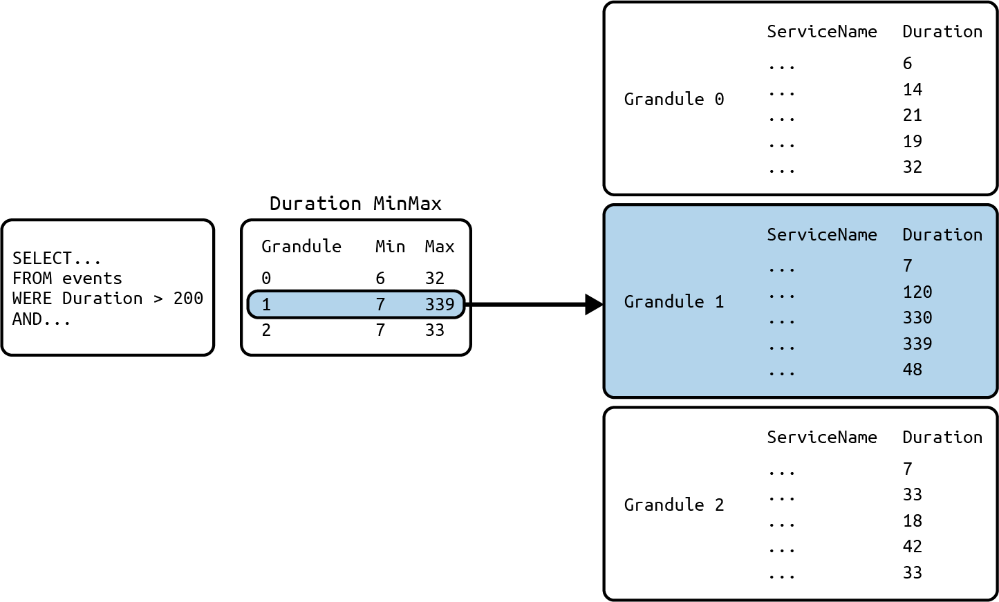
<figcaption>圖 14‑2. MinMax 索引過濾器範例。</figcaption></figure>
<p>ClickHouse 為欄位引入了反向索引，以加速全文搜尋。此功能延伸了跳過索引的概念，透過反向索引為基於 token 的查詢排除不相關的顆粒（granule）。其結果是日誌與文字搜尋的效能顯著提升，同時設定開銷極小、結果具確定性。這種做法類似於 Retriever 上使用基於 Bleve 的全文搜尋索引。</p>
<div class="callout"><p>欄位具體化（column materialization）。ClickHouse 在資料建模上一項強大的功能，就是能夠將欄位具體化。這表示某個欄位（通常衍生自既有欄位）會被單獨儲存於磁碟上，並自動更新。雖然像 Map 這類彈性資料型別，非常適合半結構化資料的初始擷取，但在大規模情境下對其進行過濾或查詢速度會較慢，因為需要在執行期間解析整個 map。</p></div>
<p>實務上的解決方案，是將用戶經常過濾使用的欄位具體化。把像 pod_name、region 或 query_id 這類高價值的 key 從 map 中取出，提升為頂層欄位，可讓系統有效運用排序鍵（ordering key）、壓縮以及跳過索引。</p>
<p>JSON 類型的一個優勢在於它會自動處理具體化（materialization）。在插入資料時，任何尚未對應到既有欄位的新欄位都會被偵測出來，並建立對應的欄位。</p>
<div class="callout"><p>由於可觀測性需要能在讀取時（而不僅是寫入時）對資料進行合成與彙總，我們可以看到一種趨同演化的現象：Retriever 中「單一行的計算欄位」這項功能，就與 ClickHouse 的欄位具體化十分類似。</p></div>
<p>投影（Projections）。投影是 MergeTree 資料表中經過查詢最佳化的內嵌欄位子集，它會以不同於基礎資料表的主鍵索引來重新排序（並可選擇性地預先彙總）資料。在內部，ClickHouse 會維護一個或多個隱藏的投影結構，並在資料擷取期間自動更新它們。這並非跳躍索引（skip index），因為投影結構預設會是其所包含欄位的完整副本。當執行查詢時，ClickHouse 會透明地選擇能將掃描資料量降到最低的投影（或基礎資料表），不需要重寫查詢或額外的合併（join）——藉此最佳化查詢執行時間。</p>
<p>當篩選或分組所依據的欄位未包含在主鍵中時，投影特別有用。它們藉由減少查詢時的 I/O 與運算來提升性能。當你需要以不同維度（例如依 Timestamp或 ServiceName 排序）支援多種查詢模式，同時仍希望維持單一資料表以簡化查詢與維護時，就該使用投影。用戶只需查詢單一資料表，ClickHouse 會自動將其查詢導向最佳的投影。</p>
<p>投影會增加儲存與擷取的額外負擔，因為必須寫入更多資料，進而提高 I/O 與記憶體用量。若使用物件儲存作為長期保留方案，可將額外的儲存成本降到最低。</p>
<h3 class="subsection">跨資料表</h3>
<p>前一節提到的單一資料表最佳化技巧，能帶來相當大的幫助。最佳化單一資料表可以改善資料佈局或索引，但其結構仍是固定的。舉例來說，主鍵是不可變的，即使避免了投影的額外成本，仍可能存在其他限制。隨著需求增加，專用資料表通常能提供更好的壓縮率與查詢性能，而 ClickHouse 提供這些好處時，不需要複雜的流水線或查詢。</p>
<p>具體化視圖（增量式）。在 ClickHouse 中，增量式具體化視圖的作用就像來源資料表上的 AFTER INSERT 觸發器。它會在 SELECT 陳述式中擷取來源資料表中新插入的行，並在插入當下將轉換或彙總後的結果寫入另一個目標資料表。這可以用來將運算</p>
<p>透過建立經過過濾或預先聚合的較小資料子集，將轉換從查詢時間提前到插入時間。</p>
<p>插入到具有單一物化視圖的資料表是原子性的，使用與 ClickHouse 其他部分相同的去重邏輯，將重試插入所產生的問題降到最低。物化視圖僅保留轉換後的結果，確保不需要時不會儲存原始資料。</p>
<p>一張資料表可以有多個物化視圖，這些視圖也可以串連起來。這讓你能夠建立簡單的串流資料流水線——過濾、聚合，或是將資料路由到特定資料表甚至另一個物化視圖。在圖 14‑3 的範例中，一個物化視圖負責將錯誤日誌的副本從較大的資料集傳送到專用的資料表。第二個串連的物化視圖會針對這些錯誤日誌計算聚合結果，之後便可用極少資源進行低延遲查詢，以支援警報等功能。</p>
<p>針對物化視圖的查詢速度快得多，因為資料早已預先計算完成，非常適合重複的存取模式或即時分析。</p>
<p>使用增量式物化視圖來實現此方法有兩個優點。首先，它為插入提供了一致的API；來源資料表定義了單一的資料進入點，其結構描述作為事件必須具備的元資料基準。</p>
<p>第二個優點是能夠在插入時對事件資料進行聚合衍生或套用過濾。一個具體的例子是 SELECT 出被視為業務關鍵的事件，例如圖 14‑3 範例中的錯誤，並將其路由到另一張具有不同保留設定的資料表，以加快查詢速度。</p>
<figure class="plate">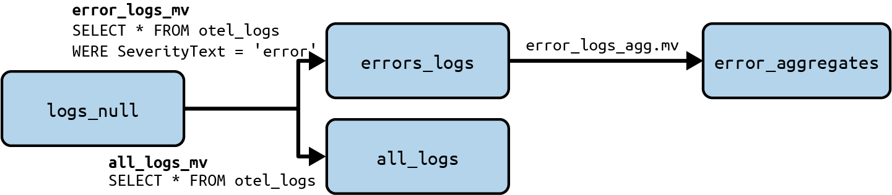
<figcaption>圖 14‑3。物化視圖在插入時過濾與聚合資料的示意圖。資料列進入 logs_null，一個視圖將所有事件複製到 all_logs，另一個視圖將錯誤過濾到 error_logs，而一個串連的視圖則將這些錯誤聚合到 error_aggregates 以供快速查詢。</figcaption></figure>
<p>合併資料表（Merge table）。在許多情況下，前述技術會產生多張資料表，各自包含不同的事件子集。這可能導致用戶需要同時對多張資料表執行查詢的情況。為了改善跨多張資料表查詢的便利性，ClickHouse 提供了Merge table。</p>
<p>雖然名稱與 MergeTree 引擎的名字相似到容易讓人混淆，但這項功能在概念上完全不同。它讓你能夠針對多個底層表定義一個視圖，無論這些表在結構描述、分區方式或排序順序上是否不同。對用戶而言，它的行為仍然如同單一資料表，即使一個 Merge 資料表可能結合了多個結構描述變體，這些變體是隨著時間累積而成，各自針對寫入當下的資料形態進行調整。</p>
<p>一個實用的例子是系統表 query_log，其中舊資料會隨著 ClickHouse 版本與結構描述更新，輪替到另一個表，例如 query_log_0、query_log_1 等。若要對所有這些表進行 SELECT，可以使用以下語法：</p>
<pre class="code"><span class="tok-keyword">SELECT</span> * <span class="tok-keyword">from</span> merge(’system’, ’^query_log.*’)</pre>
<p>此正規表達式會比對所有包含 query_log 的資料表，而 ClickHouse 將透明地拆分查詢，甚至會自動選出能為所有資料表回傳結果的最小可行結構描述。</p>
<p>採用這種方式能讓你隨著時間演進你的擷取策略與結構描述，而不需要重寫歷史資料或破壞現有查詢，同時提供一個穩定的 API 供工程師或工具使用。舉例來說，這可能涵蓋某個團隊將 HTTP 狀態碼從整數改為列舉型別（enum datatype），或是將 user_id 從 map 的鍵提升為完整鍵的情境。</p>
<p>物化視圖（materialized view）與 Merge Table 引擎的結合，讓你可以將擷取的資料拆分到專用的資料表中，同時透過 Merge table 引擎以統一視圖跨表查詢。作為一個趨同演化（convergent evolution）的例子，Retriever資料儲存也實作了此功能的一種變體，也就是 COALESCE 計算欄位，它可以從任何現存的欄位中進行選取。</p>
<p>舉例來說，圖 14‑4 說明了插入 logs_null 表中的日誌如何被過濾到兩個獨立的資料表——一個包含所有非錯誤日誌，另一個僅儲存錯誤日誌。用戶接著可以使用 Merge table 函式跨兩個資料表進行查詢，以建立所有日誌的統一視圖。</p>
<figure class="plate">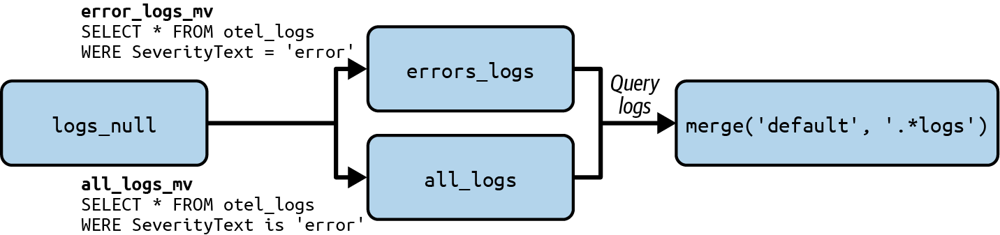
<figcaption>圖 14‑4：Merge 函式如何用來回傳兩個獨立資料表合併結果的範例。</figcaption></figure>
<p>無論是透過跳躍索引（skip index）與投影（projection）來提升單一表格內的查詢效率，還是透過具體化視圖（materialized view）與 Merge 表格跨多個表格組織資料，每種方法都能讓 schema 設計與實際查詢模式之間有更好的對應關係。透過隨著工作負載成長與變化持續演進資料模型，你就能在不增加操作複雜度的情況下維持快速且可預測的性能，並為可觀測性平台擴展的下一階段打下基礎。</p>
<h2 class="section serif">資料生命週期管理</h2>
<p>可觀測性資料遵循可預測的存取模式：近期資料經常被查詢用於即時除錯與警報，而歷史資料則較少被存取，主要用於趨勢分析與鑑識。這種自然的生命週期使分層儲存成為理想的成本優化策略。</p>
<p>ClickHouse 的存活時間（TTL）策略能根據資料年齡在儲存層之間自動移動資料。我們建議將固態硬碟（SSD）儲存——無論是實例掛載還是持久化磁碟區——用於熱層，資料最初會寫入此處，然後再根據時間或磁碟填滿百分比移動到物件儲存層（例如 S3 或 Google Cloud Storage）。</p>
<p>這裡的時間週期通常會根據你的存取模式以及大多數查詢發生的期間來決定。與 Retriever 不同的是，Retriever 會試圖積極地將資料卸載到 S3，以擴大能平行讀取該資料的 worker 集合，而 ClickHouse（在此部署模式下）則是致力於讓資料盡可能長時間留在本機主機上，只要該主機仍有可能被查詢。之後資料便可逐步轉移到成本更低的儲存類別。這個概念如圖 14‑5 所示，其中NVMe（非揮發性記憶體快速存取，non‑volatile memory express）中的資料被查詢的頻率高於旋轉式磁碟甚至物件儲存中的資料。</p>
<figure class="plate">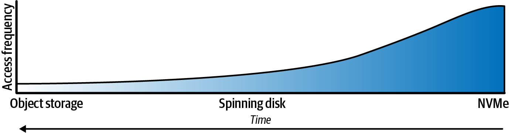
<figcaption>圖 14‑5：NVMe 中的資料比旋轉式磁碟或物件儲存中的資料更常被存取。</figcaption></figure>
<p>查詢介面維持不變，ClickHouse 會依需要從適當的層級擷取資料。ClickHouse 支援大多數物件儲存（例如 S3、Google Cloud Storage、MinIO與 Azure Blob Storage），每一種都提供降低成本的封存儲存選項。</p>
<p>以下 SQL 陳述式修改了 events 資料表，指定了數個 TTL——超過 90 天的資料會被移到 s3_ia_disk 磁碟，而超過一年的事件會被刪除：</p>
<pre class="code">ALTER TABLE events
MODIFY TTL
    Timestamp + INTERVAL <span class="tok-number">90</span> DAY TO DISK ’s3_ia_disk’,
    Timestamp + INTERVAL <span class="tok-number">365</span> DAY DELETE</pre>
<p>TTL 政策是搭配背景合併來調整資料位置。在高流量情況下，這可能會很昂貴，因為 ClickHouse 需要掃描大量資料才能判斷該刪除或移動哪些行。透過加上 ttl_only_drop_parts=1 的 SETTING，ClickHouse 就能有效率地丟棄過期資料，只需刪除整個 part，而不必逐行刪除。這仍然依賴於你的資料是依TTL 條件分群的。如果你的主鍵是以時間欄位開頭，這一點已經滿足；只有在並非如此的情況下，才需要其他替代技巧。</p>
<p>另一種做法是在符合你的 TTL 的低粒度時間範圍上使用 PARTITION BY，例如toStartOfWeek(Timestamp)。即使時間戳記不是整體排序鍵的一部分，ClickHouse 也會依該時間範圍將 part 分組，讓 TTL 能夠快速執行，而不會對ClickHouse 造成明顯負擔。</p>
<p>TTL 政策在長期歷史查詢方面還有更強大的功能。TTL 可以搭配 WHERE 子句選擇性套用，讓你能選擇將高訊號資料保留更久（例如，讓非錯誤事件較快過期）。TTL 可以逐欄套用，也可以搭配 GROUP BY 子句，透過只儲存摘要來聚合或降取樣資料。</p>
<p>總而言之，單一 ClickHouse 實例內的擴展重點在於精準，而不僅是提升效能。透過分析查詢、精煉資料模型並套用針對性優化，即使你的可觀測性工作負載成長了好幾個數量級，仍能維持低延遲效能與成本效率。</p>
<h2 class="section serif">水平擴展</h2>
<p>水平擴展建立在前面所介紹的原則之上，透過將 ClickHouse 架構延伸至多個節點與地區來實現。在本節中，我們將探討複寫如何提升持久性與可用性、分片如何實現水平可擴展性，以及 SharedMergeTree 如何透過儲存與運算分離帶來雲端原生的彈性。這些能力結合在一起，讓 ClickHouse 能夠從單一強大的伺服器無縫擴展至全球分散式的可觀測性部署。</p>
<p>現代伺服器功能強大，而 ClickHouse 的設計正是為了充分運用其能力與資源。一台配置良好的主機（CPU、RAM、NVMe SSD）就能以高擷取與查詢速率處理數 TB 的資料。</p>
<p>然而，可觀測性工作負載可能會超出單一主機的負荷。當資料量、請求速率或處理需求超過一台伺服器的能力，或是需要高可用性與故障隔離時，就有必要進行擴展：以分片提升容量、以複寫提升高可用性。</p>
<p>在可行的情況下，ClickHouse 用戶應優先考慮垂直擴展，再考慮以分片進行水平擴展。與受限於 Java Virtual Machine或架構限制的其他系統不同，ClickHouse 能夠充分運用現代硬體。垂直擴展還能將任何資料庫最慢的環節——網路——的使用降到最低。</p>
<div class="callout"><p>水平擴展也不應與高可用性或跨地區冗餘混為一談。這可以透過 ClickHouse 的複寫來實現。</p></div>
<h2 class="section serif">複寫</h2>
<p>為了提升可用性與持久性，ClickHouse 支援資料複寫。從某種意義上說，複寫與分片是正交的：每個分片都可以複寫到多個節點以實現容錯。MergeTree資料表可以使用 ReplicatedMergeTree 引擎，該引擎依賴 Keeper——一個以Raft 為基礎、用來取代 Apache ZooKeeper 的協調服務——來為每個分片維護可設定數量的複本。啟動時，ClickHouse 二進位檔可以作為伺服器或作為keeper 啟動。</p>
<p>ClickHouse 中的複製是基於資料表狀態——即資料表分片（part）與中繼資料（例如欄位名稱與類型）的組合。作為一種主動－主動（active‑active）複製模型，任何節點都可以透過以下三種操作之一來推進資料表的狀態：</p>
<p>插入（Inserts）新增新的分片。</p>
<p>合併（Merges）建立新分片並移除舊分片。</p>
<p>變更／DDL（資料定義語言）陳述式</p>
<p>新增或移除分片，及／或修改中繼資料（例如新增欄位）。</p>
<p>每項操作都在節點上本地執行，並作為全域複寫日誌中的狀態轉移記錄在Keeper 中。</p>
<p>一個典型的三節點 Keeper 群集會維護複寫日誌。所有複本一開始都位於相同的日誌位置。當節點執行本地的插入、合併、變更或 DDL 陳述式時，日誌會非同步地重播到其他複本。這最終會使複寫表趨於一致——在複本收斂之前，查詢可能會短暫回傳過時資料。對於大多數可觀測性資料而言，最終一致性已經足夠，但當需要更強的保證時，ClickHouse 透過 session 層級的設定insert_quorum 支援仲裁寫入（quorum write）。啟用後，只有在資料寫入到設定數量的複本時，INSERT 才會成功。如果未達到仲裁數，寫入就會失敗，且已插入的資料區塊會從所有複本中移除。</p>
<p>讓我們來看一個範例，說明在由三個 ClickHouse 節點組成的叢集中複寫表的運作方式。以下步驟說明插入的資料如何在 ClickHouse 叢集中的多個節點間複寫：</p>
<p>1. 一開始，複寫表是空的（見圖 14‑6）。接著，Node 1 收到兩個插入陳述式，建立了兩個資料部分（part）（見圖 14‑7）：Part A 與 Part B。它將中繼資料記錄在複寫日誌中，而該日誌儲存於 Keeper。</p>
<figure class="plate">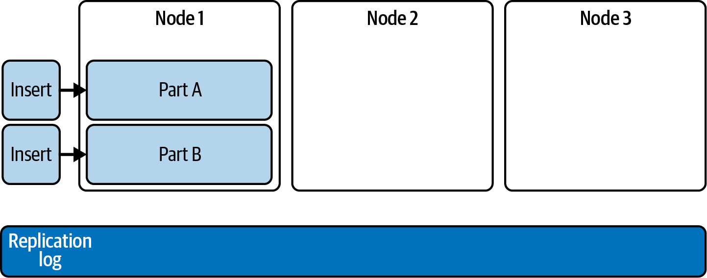
<figcaption>圖 14‑6。Node 1 中建立了兩個資料部分，A 與 B。</figcaption></figure>
<figure class="plate">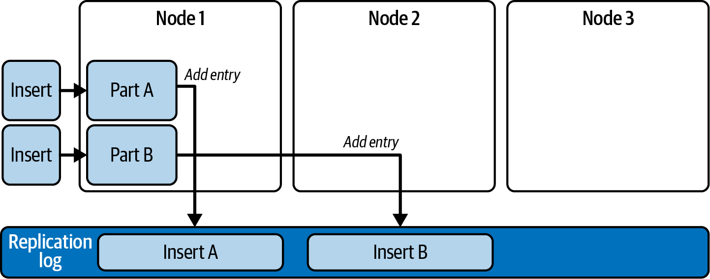
<figcaption>圖 14‑7。複寫日誌中同時新增了 Part A 與 Part B 的項目。</figcaption></figure>
<p>2. 接著，Node 2 透過擷取第一筆日誌項目來重播它，並從 Node 1 下載 Part A（參見圖 14‑8）。</p>
<figure class="plate">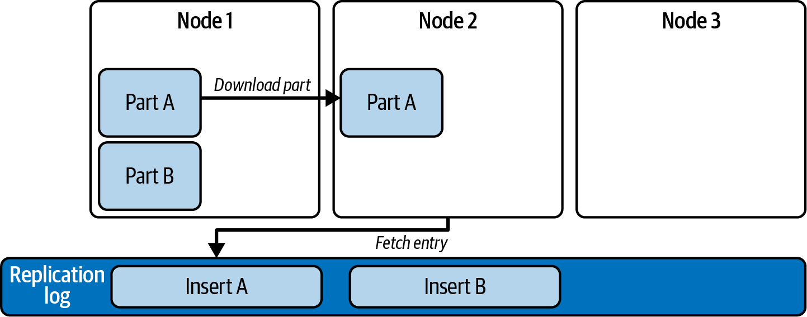
<figcaption>圖 14‑8。Node 2 從 Node 1 下載 Part A。</figcaption></figure>
<p>3. Node 3 重播兩筆日誌項目，並從 Node 1 下載 Part A 與 Part B（參見圖14‑9）。</p>
<figure class="plate">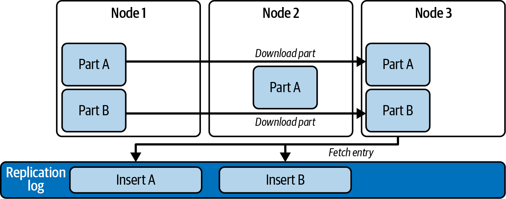
<figcaption>圖 14‑9。Node 3 從 Node 1 下載 Part A 與 B。</figcaption></figure>
<p>4. 接著，Node 3 將 Part A 與 Part B 合併為 Part C，刪除輸入的 Part，並將合併紀錄記錄到複寫日誌中（見圖 14‑10）。</p>
<figure class="plate">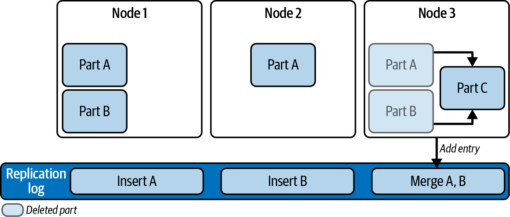
<figcaption>圖 14‑10。Node 3 將 Part A 與 Part B 合併為 Part C。</figcaption></figure>
<p>5. Node 2 追上進度並從 Node 1 下載 Part B（見圖 14‑11）。</p>
<figure class="plate">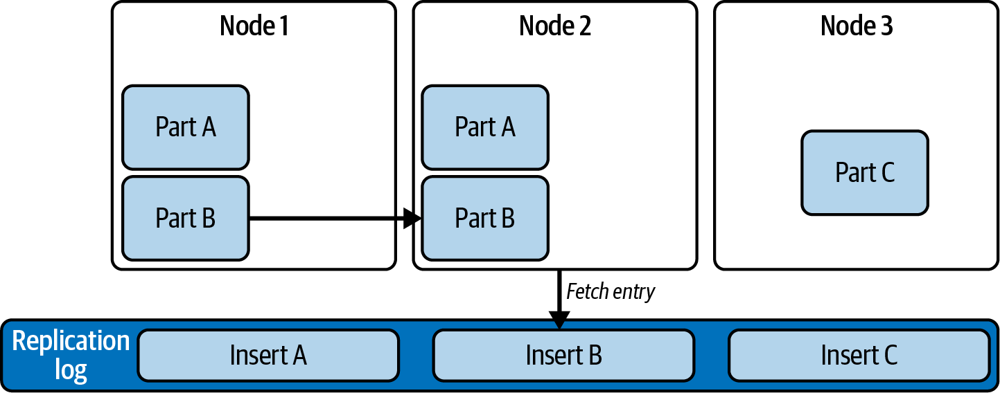
<figcaption>圖 14‑11。Node 2 從 Node 1 下載 Part B。</figcaption></figure>
<p>6. 當 Node 1 與 Node 2 讀到複寫日誌中的 Merge 紀錄時，會依叢集設定從Node 3 下載 Part C，或自行執行合併。之後，Node 1 與 Node 2 將刪除Part A 與 Part B（見圖 14‑12）。</p>
<figure class="plate">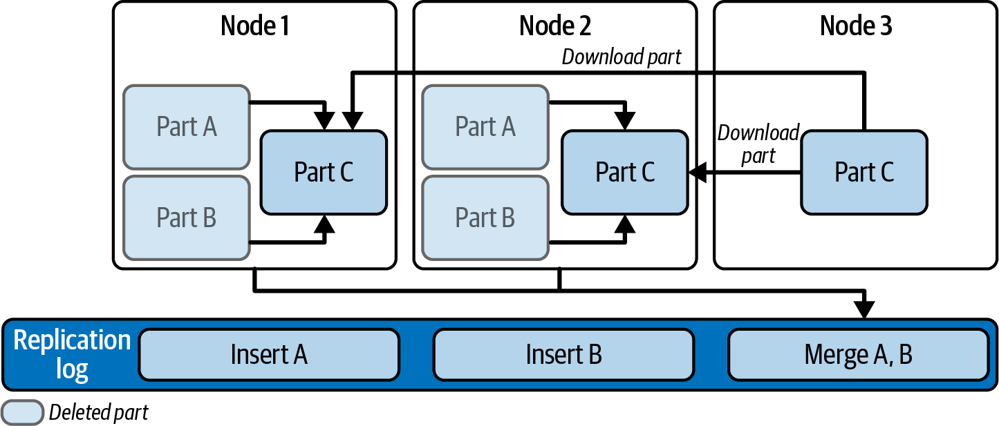
<figcaption>圖 14‑12。Node 1 與 Node 2 從 Node 3 下載 Part C。</figcaption></figure>
<p>ClickHouse 也支援備份，包括物件儲存的支援。這可以用於在系統從冷啟動開始時進行還原——也就是叢集中不存在任何資料的情況。</p>
<div class="callout"><p>複寫可防範硬體故障並支援自動容錯移轉。它也能提升查詢性能。透過並行副本功能，ClickHouse 會自動將查詢拆分，並將這些區塊分派給所有副本並行處理。</p></div>
<h2 class="section serif">分片</h2>
<p>當單一主機的容量已超出負荷時，應新增主機並將某個資料表的資料拆分成兩個（或多個）分片，以進行水平擴展。ClickHouse 採用無共享（shared‑nothing）架構：分片主機之間不會互相協調，且每個分片的資料表都是獨立的。圖 14‑13 展示了一個具有兩個分片的簡單 ClickHouse 叢集範例。</p>
<figure class="plate">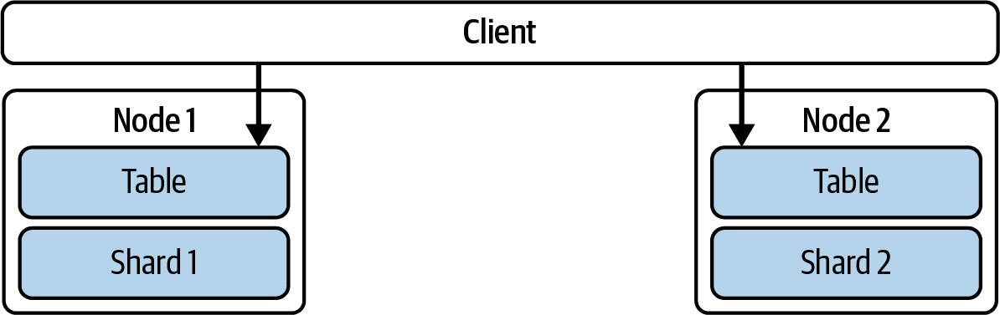
<figcaption>圖 14‑13。具有兩個節點與兩個分片的 ClickHouse 叢集。</figcaption></figure>
<p>在此結構中，寫入是完全獨立的，由插入資料的應用程式決定要使用哪個分片，如圖 14‑14 所示。這是一種非常靈活的做法，可支援任何分片結構。</p>
<figure class="plate">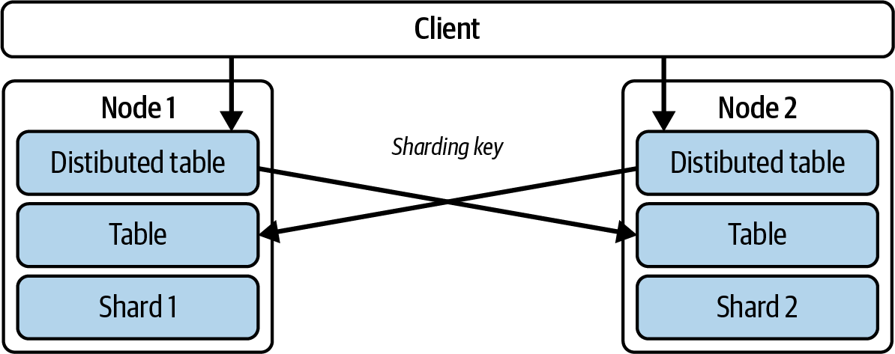
<figcaption>圖 14‑14. 具有兩個節點與兩個分片的 ClickHouse 叢集，使用 Distributed資料表與分片鍵來分配讀寫。</figcaption></figure>
<p>為方便起見，可以建立一個 Distributed 資料表。它本身不儲存資料，而是作為本機與遠端資料表的「視圖」或「代理」。插入的資料可以根據衍生自資料的指定「分片鍵」（例如 ServiceName 或 Region）自動分配到叢集的各個分片，該分片鍵決定特定的一列資料會儲存在哪個分片上。分片鍵不需要與主鍵有關。或者，ClickHouse 也可以在每次插入時隨機選擇一個分片，以在叢集節點間達到均勻的資料分佈。</p>
<p>在此範例中，兩個分片上都設定了一個 Distributed 資料表，因此用戶端可以連接到任一節點來插入或選取資料。插入資料時，ClickHouse 會為每一列資料評估分片鍵，判斷該列應儲存在何處，並將插入路由到該特定分片。選取資料時，Distributed 資料表會將查詢轉發給所有持有目標資料表分片的伺服器，每台 ClickHouse 伺服器會平行計算其本機的彙總結果。接著，持有最初目標 Distributed 資料表的 ClickHouse 伺服器會收集所有本機結果，將它們合併成最終的全域結果，並回傳給查詢發送者。</p>
<h2 class="section serif">單一區域可觀測性叢集</h2>
<p>一個用於可觀測性工作負載的簡單 ClickHouse 叢集，通常由兩個使用ReplicatedMergeTree 資料表的 ClickHouse 節點，以及一個具有三個副本的Keeper 群集所組成。為了提高可靠性，最好將 Keeper 部署在獨立的節點上。寫入可以在多個 ClickHouse 節點之間進行負載平衡，以提升吞吐量，如圖14‑15 所示。</p>
<figure class="plate">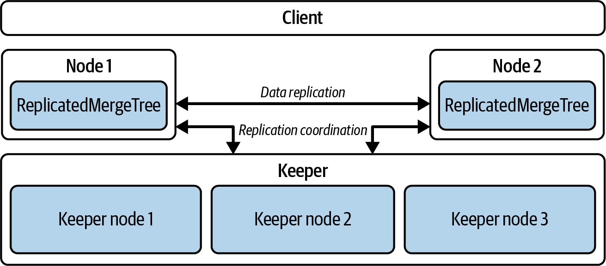
<figcaption>圖 14‑15。使用 ReplicatedMergeTree 進行多節點複寫的 ClickHouse 叢集。</figcaption></figure>
<p>在現代硬體上，一台配備 32 核心 CPU 與 128 GB RAM 的 ClickHouse 伺服器每天可攝入約 200 億筆事件，尖峰可達每秒約 30 萬到 40 萬筆事件。若在複本之間妥善做負載平衡，可達每秒 50 萬筆事件。增加更多節點幾乎能讓攝入頻寬呈線性擴展。得益於 ClickHouse 強大的壓縮能力，可觀測性資料通常能縮小 10 到 20 倍。舉例來說，單日 20 TB（terabytes）的原始資料量，壓縮後在磁碟上可能只剩 1 到 2 TB。以兩台伺服器為例，每台配備 7.5 TB 本機掛載的 NVMe 磁碟，採高可用性架構（也就是每台伺服器都儲存一份完整的資料副本）：在需要動用物件儲存以做更長期保留之前，這樣的配置至少可以儲存三天份的資料。</p>
<p>ClickHouse 的查詢性能高度取決於查詢模式。在此架構下，只要應用有效的架構設計、適當的分區以及有效的索引等最佳實務，即使在大規模情況下，典型的可觀測性工作負載也能達到次秒級的回應時間。</p>
<h2 class="section serif">跨區域可觀測性叢集</h2>
<p>在跨區域部署中，每個區域各自處理自己的攝入作業。寫入會導向該區域的本地 ClickHouse 節點，藉此將延遲降到最低、提升可靠性並降低成本。如圖14‑16 所示，上層有一張 Distributed 資料表，以 Region 欄位作為分片鍵——主要用於將查詢路由到正確的區域——而所有寫入則都維持在本地進行。</p>
<p>區域內的擴展是透過在該區域內增加分片與複本來實現。這樣做能同時提升攝入頻寬與查詢平行度，而複本則能提升容錯能力。</p>
<figure class="plate">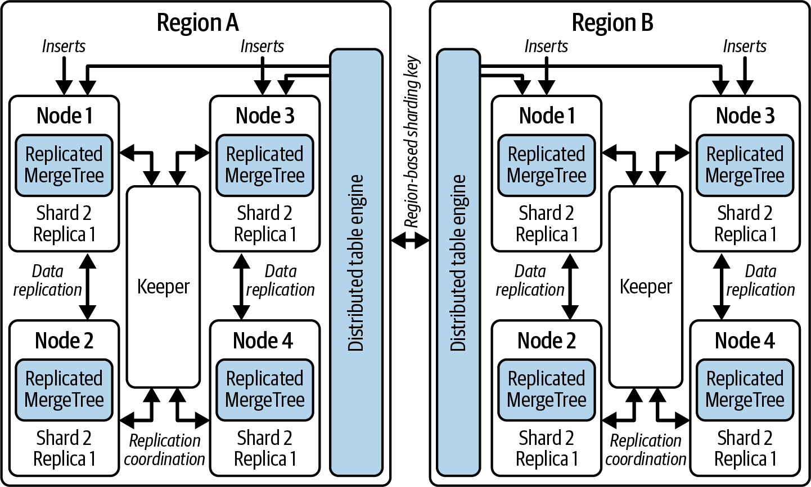
<figcaption>圖 14‑16。使用 Distributed 表引擎與 ReplicatedMergeTree 的跨區域可觀測性叢集。</figcaption></figure>
<p>跨區域擴展只是簡單的組態設定與資源配置：新增一個區域，只需在Distributed 表定義中以 Region 欄位為鍵擴充另一個分片即可。查詢會自動感知新區域，讓使用者能進行跨所有區域的聯合分析，或將查詢範圍限縮在單一區域以提升效率。</p>
<p>這種設計自然而然地實現了地理分散的故障隔離。若某個區域無法使用，查詢仍可繼續在其餘區域上執行。資料在寫入時仍保留在其所屬區域內，但全域的Distributed 表提供了統一的檢視，確保整個部署同時具備韌性與可用性。</p>
<h2 class="section serif">SharedMergeTree</h2>
<p>ClickHouse 的 SharedMergeTree 與 Honeycomb 的Retriever 都提供了一種方式，將儲存與運算分離，以支援大量的分析工作負載。兩者都採用類似的架構理念：讓無狀態的查詢節點從分散式物件儲存讀取資料，而非單純依賴本地磁碟。然而，要讓基本的可觀測性後端運作起來，Retriever 與SharedMergeTree 皆非必要條件。</p>
<div class="callout"><p>SharedMergeTree 表引擎家族是一種專有的雲端原生方案，用來取代ReplicatedMergeTree，並針對共享物件儲存（例如 AWS S3、Google Cloud Storage、Azure Blob Storage、MinIO）進行了最佳化。它驅動著ClickHouse Cloud，相較於 ReplicatedMergeTree 具有以下幾項優勢：</p></div>
<p>無需資料分片。</p>
<p>所有資料都以單一分片的形式儲存於物件儲存之上。資料不會在節點之間複製；相反地，各節點會透過 Keeper 得知該單一分片的狀態。</p>
<p>儲存與計算之間有更深層的分離。</p>
<p>計算資源可以水平擴展，也可以垂直擴展，多個節點可並行讀取同一個分片的資料。在這種情況下，副本並不持有資料的複本，而只是針對該份資料提供額外的「副本計算」能力。</p>
<p>查詢執行可在多個節點之間共享。</p>
<p>每個節點負責完成所需工作的一部分。這使得跨多個攝取工作者能維持更高的寫入吞吐量。</p>
<p>更快速的擴大與縮小規模操作。</p>
<p>這是因為資料不會被複製。這也使得縮減至零成為可能，屆時副本只會在真正需要時才被喚醒。</p>
<p>針對 SELECT 查詢提供輕量、強一致性的保證。</p>
<p>由於使用物件儲存而非成本較高的 NVMe 硬碟，儲存成本因而降低。</p>
<p>與 ReplicatedMergeTree 不同，SharedMergeTree 中的副本並不直接互相溝通，而是透過共享儲存與 Keeper 進行協調。Keeper 會複製由插入、更新與合併所修改的全域狀態，藉此確保各節點保持同步。透過 Keeper，每個節點都能得知最新的資料，並維持對該單一複本的最新視圖。由於節點本身不維護狀態，擴大或縮小規模的速度更快，合併與變更操作的額外負擔也更低。SharedMergeTree 支援每個表格擁有數百個副本，可在不需要分片的情況下實現彈性擴展。ClickHouse Cloud 使用分散式查詢執行，以便為單一查詢動用額外的計算資源。</p>
<p>我們認為，只要能夠使用這項專有服務，SharedMergeTree 就非常適合用來對大多數可觀測性工作負載進行擴展。它提供更高的寫入吞吐量與更低的儲存成本——實際上使得資料保留期限不再成為問題。</p>
<h2 class="section serif">資料視覺化</h2>
<p>在我們將所有遙測資料放入 ClickHouse 之後，最關鍵的問題是：如何讓 SRE與開發人員更容易使用這些功能？</p>
<p>由於 ClickHouse 支援標準 SQL，用戶可以在其上建立自己的可觀測性工具以符合需求。這對於採用極致規模或高度專門化工作流程的團隊來說相當有用，不過大多數用戶其實只需要一個開箱即用的熟悉介面，例如 HyperDX 所提供的介面，如圖 14‑17 所示。</p>
<figure class="plate">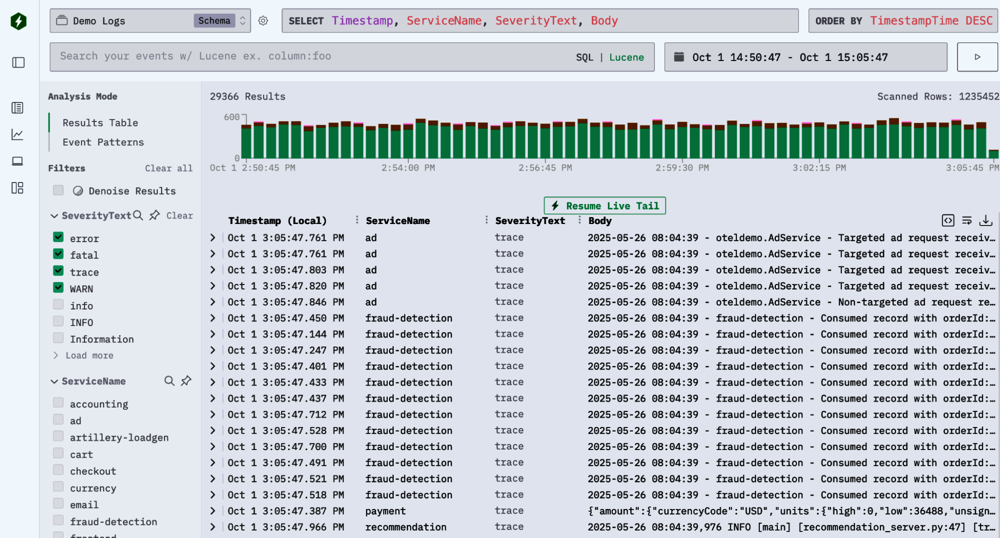
<figcaption>圖 14‑17 HyperDX 開源介面，用於搜尋日誌與追蹤。</figcaption></figure>
<p>對大多數團隊而言，HyperDX——一個採 MIT 授權、專為 ClickHouse 原生打造的開源視覺化層——提供了探索可觀測性資料的直覺方式。它提供進階篩選、時間軸檢視與即時儀表板，並搭配 Lucene 風格的查詢語法，讓複雜查詢比使用 SQL 更簡單。我們自行建置 UI 時，這個工具還不存在，但如果當時已有，我們會毫不猶豫地以它為基礎來開發。</p>
<h2 class="section serif">在可觀測性工作負載中使用 ClickHouse</h2>
<p>現代可觀測性堆疊需要一個能吸收龐大資料量、適應不斷變化的遙測資料，並能快速回傳答案的資料儲存。ClickHouse 憑藉其欄位儲存架構、MergeTree引擎與彈性綱要，滿足了這些需求。這使得高效的資料擷取、平順的演進、進階索引與可擴展的部署得以實現。</p>
<p>搭配 OTel 與 HyperDX 等工具，可為團隊建構自有可觀測性平台提供快速、具成本效益且開放的基礎。</p>
<p>如今，許多團隊使用 ClickHouse 來驅動自訂的可觀測性系統，範圍涵蓋商業供應商到大型自行管理的部署。其性能、可擴展性與開放式設計，相較於專有軟體即服務（SaaS）產品提供了強而有力的替代方案。</p>
<h2 class="section serif">結論</h2>
<p>我們很高興能分享 ClickHouse 團隊提供的這篇內容，展示另一種資料儲存實作方式，與前一章對 Honeycomb Retriever 引擎的詳細說明形成對比。對於想要建構自有可觀測性解決方案的團隊來說，ClickHouse 是一個穩健且強大的資料儲存。用於可觀測性工作負載的資料儲存應設計成能夠快速分析非常龐大的資料集，而本章將為你建構自訂系統提供基礎。</p>
<p>在下一章中，我們將透過探討取樣，檢視管理遙測資料量的另一個面向。在大規模的情況下，原本涓涓細流的可觀測性資料，可能會演變成滔滔洪流。有效的取樣策略能幫助你平衡資源，甚至能減輕你所選用的可觀測性後端的負載。</p>

  <footer class="colophon">
    <span>《可觀測性工程》第二版 · 第 14 章</span>
    <span>使用 ClickHouse 進行高效資料儲存</span>
  </footer>
</main>
